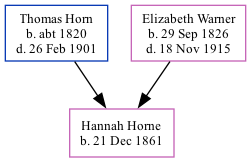

Hannah Horne 1861 -
[ Home ] | [ Calendar ] | [ Surnames Index ] | [ Family History ]A domestic housemaid and the daughter of Thomas Horn (a farm bailiff) and Elizabeth Warner (a general shopkeeper)Hannah Horne, the great-great-aunt of Nigel Horne, was born in St Peters, Thanet, Kent, England on Dec 21, 18611,2 and baptized there on Feb 9, 1862.
Throughout her life, Hannah lived in several places: at Northdown, Margate, Kent, England on Apr 2, 18713; at High Street, Ramsgate, Kent on Apr 3, 18815; and at 4 Chandos Place, Broadstairs, Kent on Apr 5, 18914.
Parents
- Thomas was born c. 1820
- Elizabeth Ann was born on Sep 29, 1826
Citations
- 1871 England Census Online publication - Provo, UT, USA: The Generations Network, Inc., 2004.Original data - Census Returns of England and Wales, 1871. Kew, Surrey, England: The National Archives of the UK (TNA): Public Record Office (PRO), 1871. Data imaged from the National
- England & Wales, FreeBMD Birth Index, 1837-1915 Online publication - Provo, UT, USA: The Generations Network, Inc., 2006.Original data - General Register Office. England and Wales Civil Registration Indexes. London, England: General Register Office. © Crown copyright. Published by permission of the Cont
- 1871 England, Wales & Scotland Census - Findmypast (was age 9 and the daughter of the head of the household)
- 1891 England, Wales & Scotland Census - Findmypast (was age 27 and a servant in the household)
- 1881 England, Wales & Scotland Census - Findmypast (was age 19 and a servant in the household)
Media
1891 England, Wales & Scotland Census Transcription - GBC-1891-0005911619
1881 England, Wales & Scotland Census - GBC/1881/0004844413
Family Tree
Generated by ged2site. Last updated on Nov 13, 2024